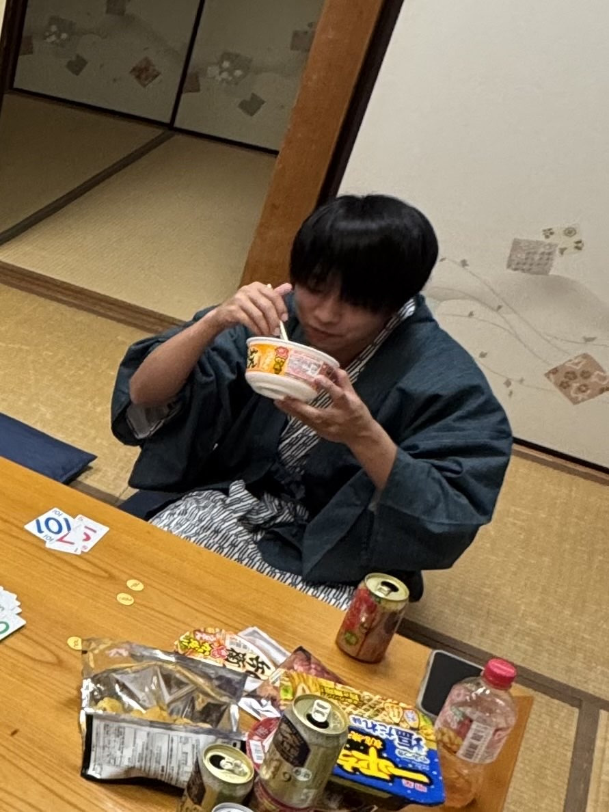

渡辺 悠斗
―― 料理研究家 ――
生年月日：20xx年 x月 xx日
身長：xxxcm

紹介
渡辺さんは暗く内向的です。特にスポーツと音楽と彼女が好きで、週末はよく仕事をしています。 チームワークが苦手で、どんな場面でも絶対にチームをまとめません。

―― 料理研究家 ――
生年月日：20xx年 x月 xx日
身長：xxxcm
渡辺さんは暗く内向的です。特にスポーツと音楽と彼女が好きで、週末はよく仕事をしています。 チームワークが苦手で、どんな場面でも絶対にチームをまとめません。